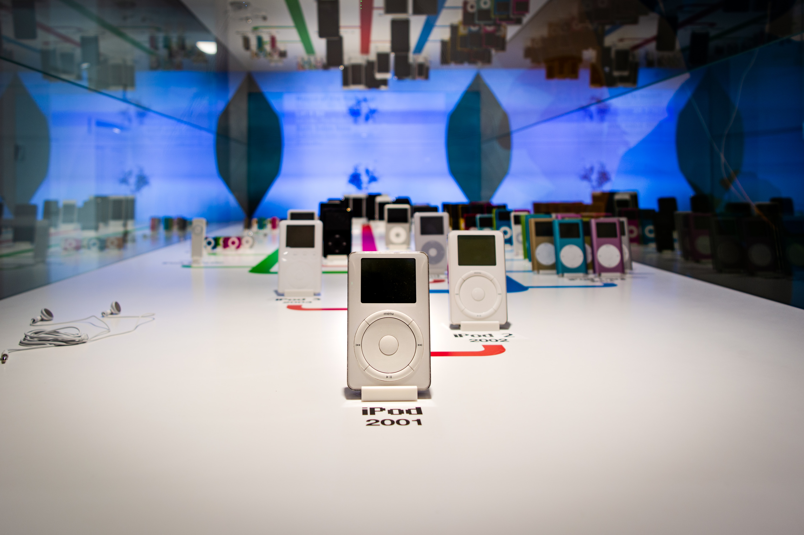

About
iPods were first relased in October 2001 starting with the iPod Classic. iPods were a portable music player or a usb drive if someone had the first generation iPod Shuffle. In 2001 phones didn't have music options as they do today. If you wanted to listen to music on the go, you either had a portable CD player or an MP3 player. Before iPhones were relased, the iPods was the majority of Apple's revenue.
